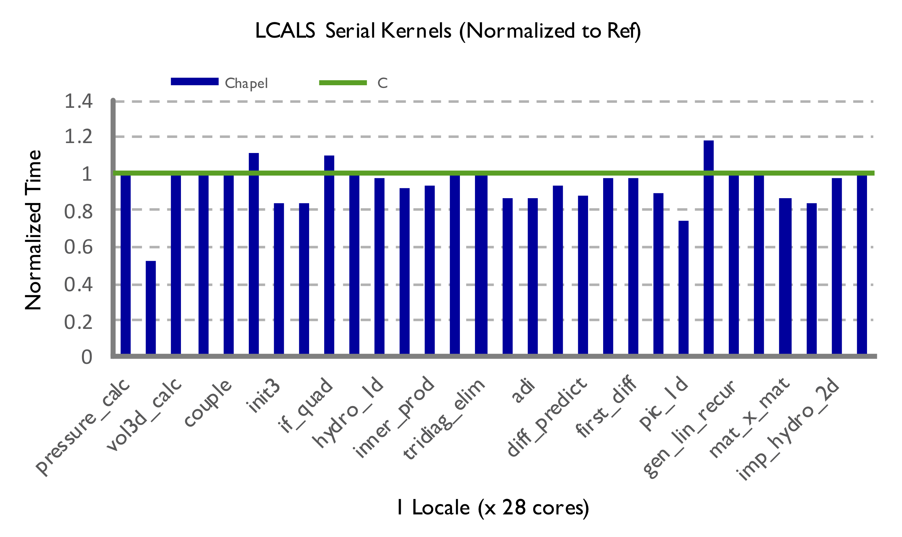
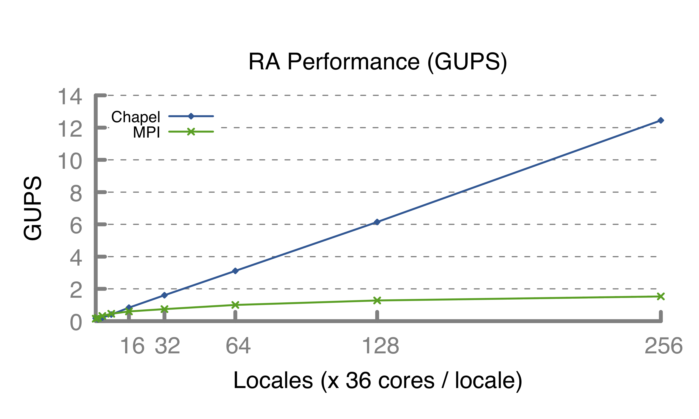
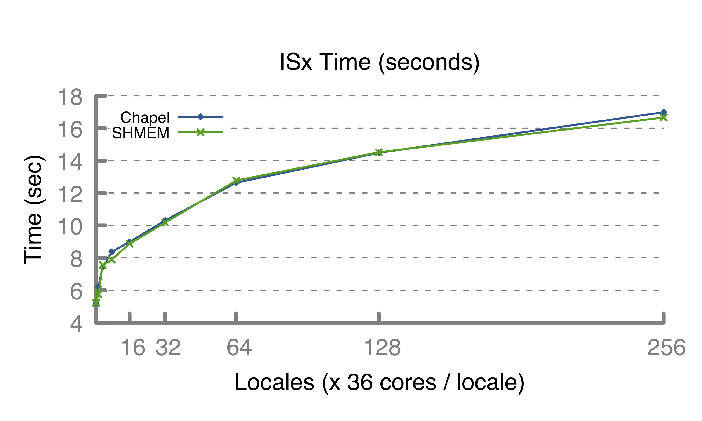

|

local loops |

memory bandwidth |

global random updates |

stencils |
 3D transpose
3D transpose
|

bucket-exchange |
Performance Tips
Not getting the performance you were expecting from your Chapel
program? We've assembled this collection
of tips.
Nightly Performance Graphs
We run a suite of performance tests each night to track Chapel
performance, memory usage, and other statistics of note,
graphing the results.